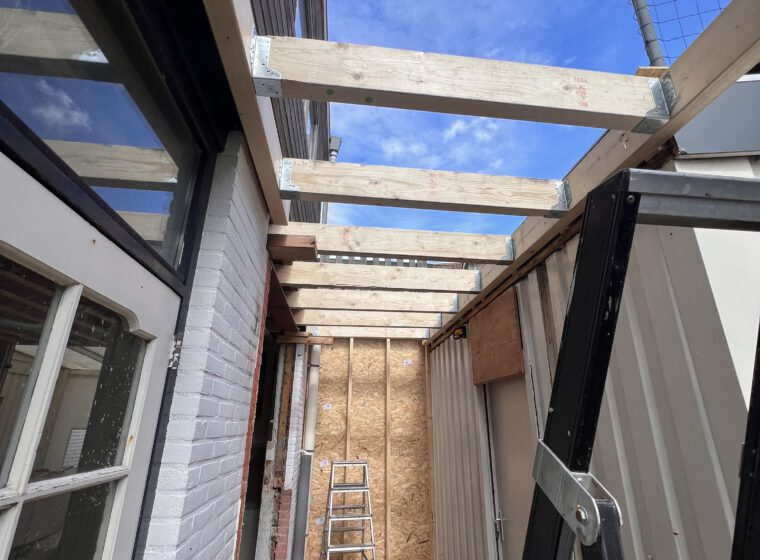

Kort antwoord: laat de belastingroute controleren
Een aanbouw moet belastingen veilig afdragen naar de ondergrond. De constructeur bepaalt daarom niet alleen de maat van een ligger boven de doorbraak. Ook opleggingen, stabiliteit, dak, wanden en fundering horen bij dezelfde route. Een plattegrond laat zien wat je wilt; de berekening onderbouwt hoe dat kan worden gedragen.
Laat dit vóór bestellen en slopen uitwerken. Als de pui, dakopbouw of opening later verandert, kunnen ligger, kolom en fundering mee veranderen.

Bewaarbare 7-punten dossiercheck
- Bestaande situatie: kloppen maatvoering, wanddiktes, vloerrichting en bekende fundering met de woning? Noteer wat nog op locatie moet worden geopend of ingemeten.
- Nieuwe geometrie: staan buitenmaten, dakvorm, kozijnopeningen en de volledige geveldoorbraak op dezelfde revisie van de tekening?
- Uitgangspunten: zijn materiaal, gebruik en relevante belastingen benoemd? Zo zie je waarop de berekening is gebaseerd.
- Fundering: is duidelijk hoe reacties uit wanden en kolommen naar de bodem gaan? Lees ook waarop je let bij de fundering van een aanbouw.
- Liggers en opleggingen: staan ligger, eventuele kolommen, opleglengtes en verbindingen aangegeven? Alleen een staalmaat zonder aansluitdetails is geen uitvoerbaar dossier.
- Afstemming: botsen constructiedelen niet met pui, daklicht, afvoer, ventilatie of elektra? Leg wijzigingen eerst terug bij ontwerper en constructeur.
- Uitvoerbare set: hebben berekening en constructietekening dezelfde datum en versie, en is vastgelegd wie vragen of afwijkingen tijdens de bouw beoordeelt?
Drie signalen om nog niet te starten
- De aannemer, tekenaar en constructeur werken met verschillende plattegronden.
- De bestaande fundering of draagrichting is aangenomen, maar niet gecontroleerd.
- Er staat wel een ligger op papier, maar niets over oplegging, tijdelijke ondersteuning of verbindingen.
Stop dan vóór sloop of bestelling. Een kleine wijziging op papier is meestal eenvoudiger dan herstel op de bouwplaats.
Vergunning, casco-scope en prijs
Doe voor jouw adres de officiële Vergunningcheck van het Omgevingsloket. Het stappenplan bij bouwen en verbouwen helpt bij de volgorde van regels, ontwerp en uitvoering. Welke stukken nodig zijn, hangt af van plan en locatie; gebruik dus geen dossier van de buren als standaard.
Via onze calculator krijg je een casco-prijsindicatie als bandbreedte. De definitieve offerte legt vast welke constructieve uitwerking is inbegrepen. Binnenafbouw zoals stucwerk, vloer en keuken zit niet standaard in de casco-indicatie; bekijk ook wat casco bij een aanbouw betekent.
Veelgestelde vragen
Is een constructietekening hetzelfde als een berekening?
Nee. De berekening onderbouwt de gekozen onderdelen; de tekening maakt maten, posities en verbindingen uitvoerbaar. Controleer dat beide dezelfde versie beschrijven.
Wie maakt een constructieberekening voor een aanbouw?
Een constructeur werkt de draagconstructie uit op basis van het ontwerp en de gecontroleerde bestaande situatie. Vraag vooraf welke opname en tekeningen nodig zijn.
Kan de berekening na het bestellen nog veranderen?
Ja, als maatvoering, opening, materiaal of aangetroffen woningconstructie afwijkt. Laat wijzigingen beoordelen vóór je onderdelen aanpast of monteert.
Eerst formaat en casco-budget bepalen?
Stel je aanbouw samen voor een casco-bandbreedte. Op locatie maken we scope, constructie en bereikbaarheid concreet voor de definitieve offerte.